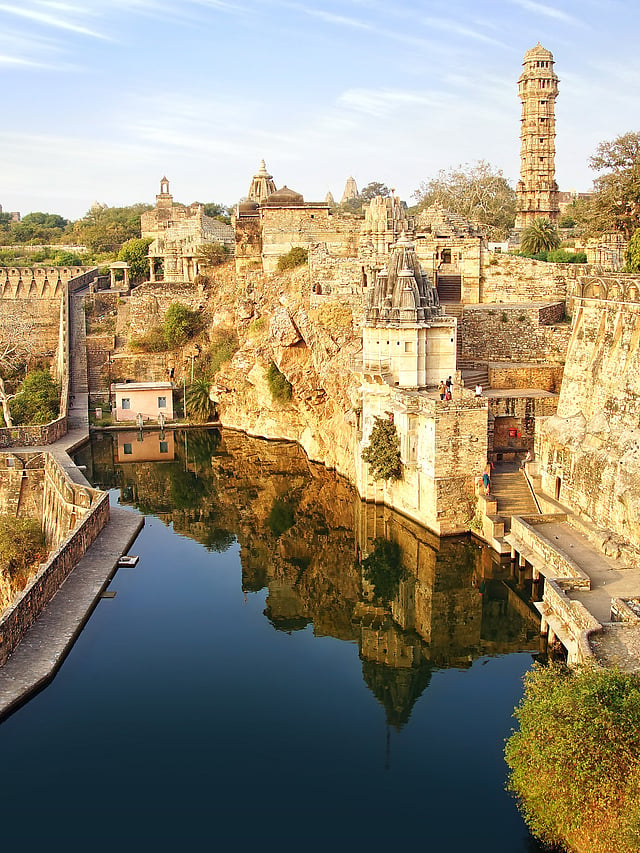
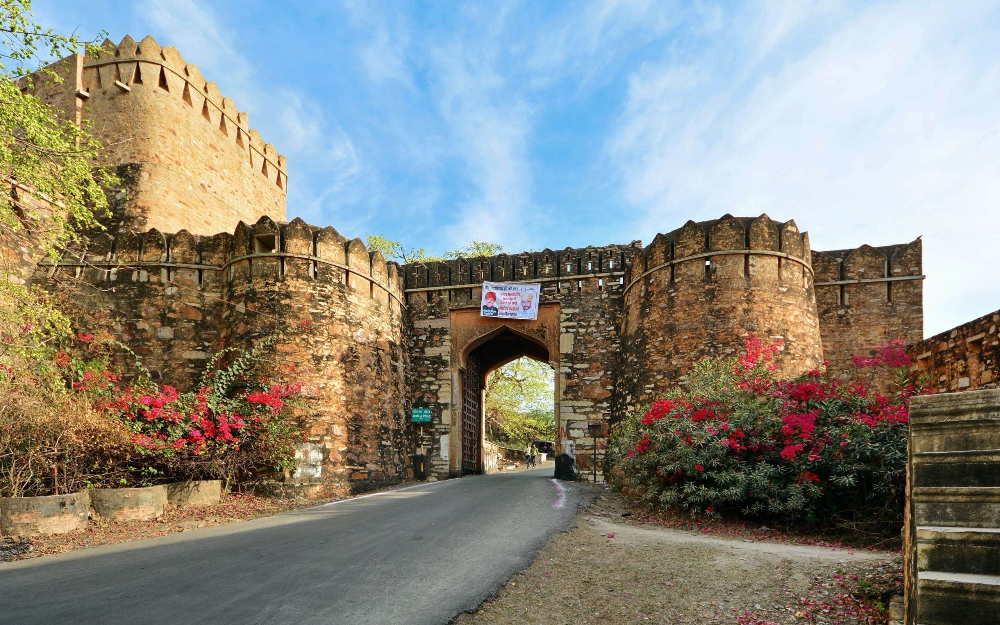

The Largest Fort in India & Symbol of Rajput Bravery
Chittorgarh Fort is the largest fort complex in India and one of the most important symbols of Rajput courage and sacrifice. Spread across nearly 700 acres on a hilltop, the fort dominates the landscape of Chittorgarh in Rajasthan.
Recognized as a UNESCO World Heritage Site under the Hill Forts of Rajasthan, the fort reflects centuries of heroic resistance and royal traditions.

The origins of Chittorgarh Fort date back to the 7th century when it was associated with Mauryan rulers. Later it became the capital of Mewar under the Sisodia Rajputs.
The fort witnessed three famous sieges:
During these invasions, Rajput warriors fought bravely while royal women performed Jauhar to protect their honor. These events became legendary chapters of Rajput history.
One of the most famous legends connected with Chittorgarh is that of Queen Rani Padmini. According to historical folklore, Alauddin Khilji attacked the fort after hearing about her beauty.
Rather than surrender, Rani Padmini and other royal women performed Jauhar. The story remains a powerful symbol of sacrifice and dignity in Rajput culture.

Chittorgarh Fort includes palaces, temples, towers and water reservoirs spread across a vast plateau.
Built by Rana Kumbha in the 15th century, this nine-storey tower celebrates victory over invading armies.
An earlier Jain tower dedicated to spiritual teachings.
One of the oldest palace structures, associated with many historic events.
Located near a lotus pool, this palace is linked with the legend of Rani Padmini.
A sacred water source continuously fed by natural springs.
The fort represents Rajput military planning and cultural traditions. Its strategic hilltop position provided strong defense advantages.
UNESCO recognized Chittorgarh Fort as part of the Hill Forts of Rajasthan for its outstanding universal value.
Chittorgarh Fort stands as a timeless symbol of Rajput bravery and sacrifice. Its massive walls, historic towers and legendary stories make it one of the most powerful heritage destinations in India.